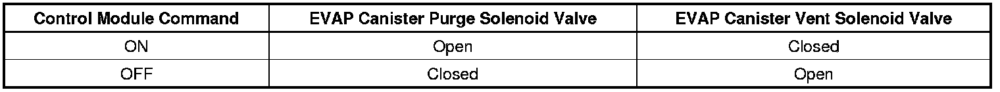

P0496
DTC P0496
Diagnostic Instructions
* Perform the Diagnostic System Check - Vehicle (Initial Inspection and Diagnostic Overview) prior to using this diagnostic procedure.
* Review Strategy Based Diagnosis (Initial Inspection and Diagnostic Overview) for an overview of the diagnostic approach.
* Diagnostic Procedure Instructions (Initial Inspection and Diagnostic Overview)provides an overview of each diagnostic category.
DTC Descriptor
DTC P0496
- Evaporative Emission System Flow During Non-Purge
Circuit/System Description
This DTC tests for undesired intake manifold vacuum flow to the evaporative emission (EVAP) system. The control module seals the EVAP system by commanding the EVAP canister purge solenoid valve OFF and the EVAP canister vent solenoid valve ON. The control module monitors the fuel tank pressure (FTP) sensor to determine if a vacuum is being drawn on the EVAP system. If vacuum in the EVAP system is more than a predetermined value within a predetermined time, this DTC sets. The following table illustrates the relationship between the ON and OFF states, and the Open or Closed states of the EVAP canister purge and vent solenoid valves.

Conditions for Running the DTC
* DTCs P0107, P0108, P0112, P0113, P0117, P0118, P0125, P0128, P0442, P0443, P0446, P0449, P0452, P0453, P1516 are not set.
* The ignition voltage is between 10-18 volts.
* The barometric pressure (BARO) is more than 74 kPa.
* The fuel level is between 15-85 percent.
* The engine coolant temperature (ECT) is less than 30°C (86°F).
* The start-up IAT is less than 30°C (86°F).
* The intake air temperature (IAT) is between 4-30°C (39-86°F).
* The start-up ECT and IAT are within 8°C (14°F) of each other.
* The FTP sensor is less than -2.5 inches H2O at ignition ON.
* DTC P0496 runs once per cold start for 96 seconds.
Conditions for Setting the DTC
* The control module detects vacuum during a non-purge condition.
* The FTP sensor is more than -10 inches H2O for 60 seconds.
Action Taken When the DTC Sets
DTC P0496 is a Type B DTC.
Conditions for Clearing the MIL/DTC
DTC P0496 is a Type B DTC.
Reference Information
Schematic Reference
* Evaporative Emissions Hose Routing Diagram ([1][2]Emission Control Systems)
* Engine Controls Schematics (Electrical Diagrams)
Connector End View Reference
Component Connector End Views (Connector Views)
Electrical Information Reference
* Circuit Testing (Component Tests and General Diagnostics)
* Troubleshooting with a Test Lamp (Component Tests and General Diagnostics)
* Testing for Intermittent Conditions and Poor Connections (Component Tests and General Diagnostics)
* Wiring Repairs (Component Tests and General Diagnostics)
DTC Type Reference
Powertrain Diagnostic Trouble Code (DTC) Type Definitions (Diagnostic Trouble Code Descriptions)
Scan Tool Reference
Control Module References (Programming and Relearning)for scan tool information
Circuit/System Testing
1. Start the engine.
2. Seal the EVAP system using the Purge/Seal function with a scan tool.
3. Observe the FTP sensor with a scan tool. The Fuel Tank Pressure Sensor parameter should be less than 1.7 volts after 90 seconds.
• If the Fuel Tank Pressure Sensor parameter is greater than the specified range, replace the EVAP canister purge solenoid valve.
Repair Instructions
Perform the Diagnostic Repair Verification (Verification Tests) after completing the diagnostic procedure.
Evaporative Emission Canister Purge Solenoid Valve Replacement (Service and Repair)